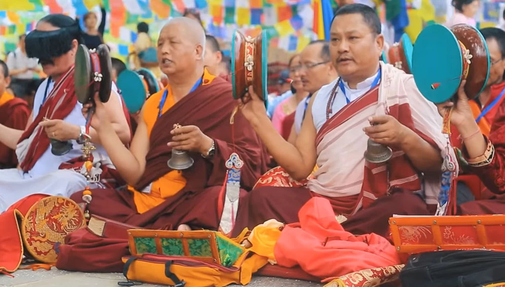
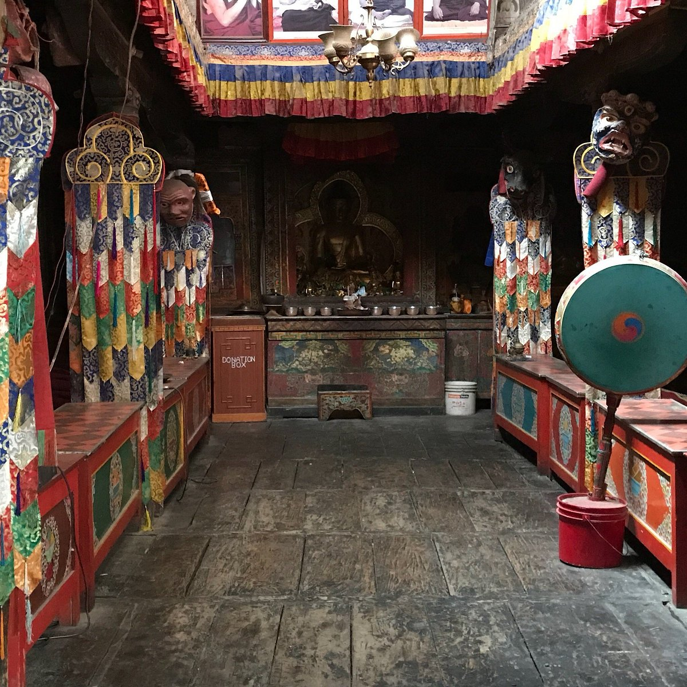
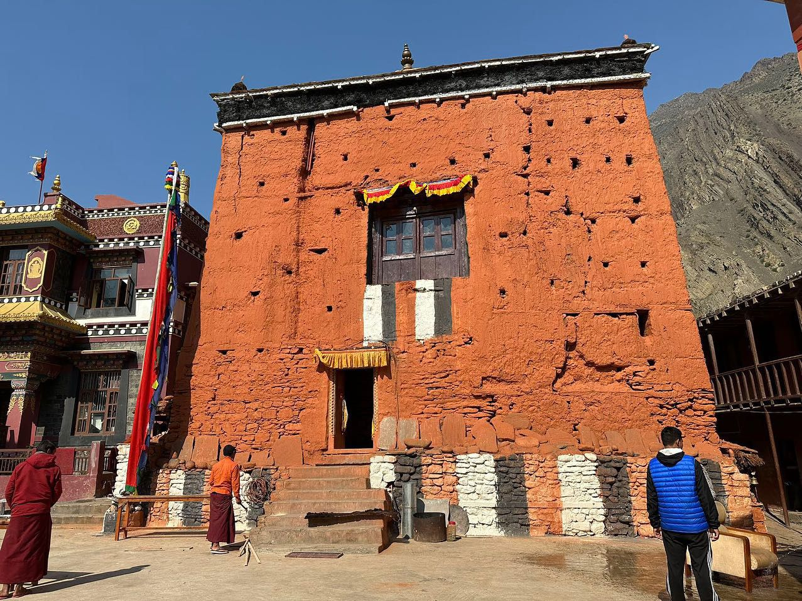
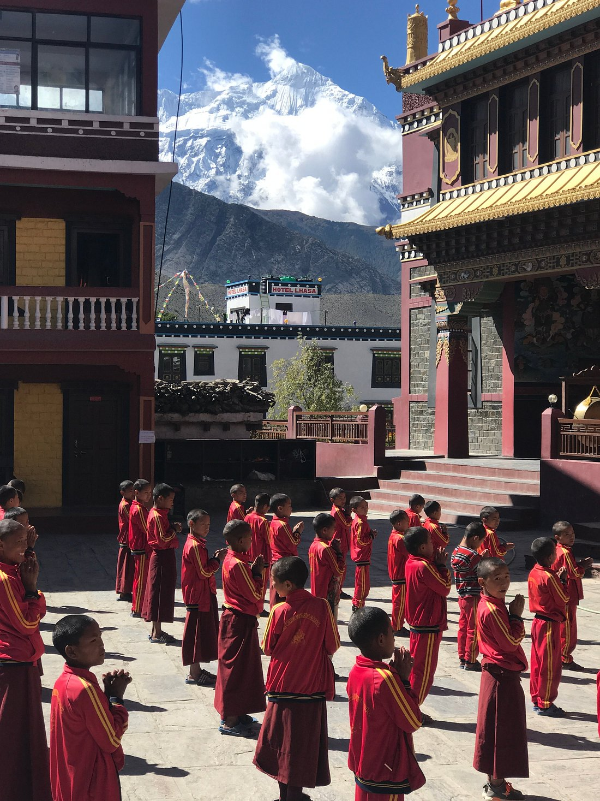

Cultural preservation
Annual celebrations of Losar, Tiji, and Chhongu, plus dance, music, and language programs that pass the heritage of the Kingdom of Lo to the next generation.
Est. 2003 · New York City
Mustang Kyidug USA unites the Mustangi community across the United States — preserving the language, festivals, and living traditions of Mustang, Nepal, and giving back to the homeland we carry with us.

Who we are
Mustang Kyidug USA is a nonprofit organization dedicated to preserving the rich culture of Mustang, Nepal — and to supporting every Mustangi family building a life in the United States. We are a bridge between generations, keeping our traditions, values, and identity strong as we grow in a new land.
What we do
Everything we organize — from Losar celebrations in Queens to school projects in Lo Manthang — grows from these commitments.
Annual celebrations of Losar, Tiji, and Chhongu, plus dance, music, and language programs that pass the heritage of the Kingdom of Lo to the next generation.
A support network for newcomers and families — guidance on settling in, education resources, professional networking, and gatherings that keep us connected.
Scholarships, healthcare aid, and infrastructure projects in Mustang, Nepal — so the villages we come from thrive alongside the community abroad.
“Wherever we settle, Mustang lives in us — in our language, our prayers, and the way we gather.” Mustang Kyidug USA community
Celebrations
Each year our community gathers to celebrate the great festivals of Mustang — in New York and back home in Nepal.

Two weeks of renewal and reunion — prayer ceremonies, guthuk feasts, traditional dance, and new prayer flags to welcome the year.
Explore Losar
Three days of masked dances in the walled city of Lo Manthang, retelling the victory of good over evil through the deity Dorje Jono.
Explore Tiji
Our annual gathering of families and friends — performances, workshops for the young generation, and stories shared across tables.
Explore ChhonguGallery
Whether you are from Mustang, second-generation Mustangi, or simply love Himalayan culture — there is a place for you here. Volunteer, attend, sponsor, or just say hello.